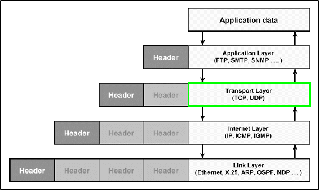

Transport Layer

TCP
is the most used
transport protocol
on the Internet(example of applications that use it: email clients, web browsers and FTP clients)
and because of that
IP protocol suite
is often called
TCP/IP